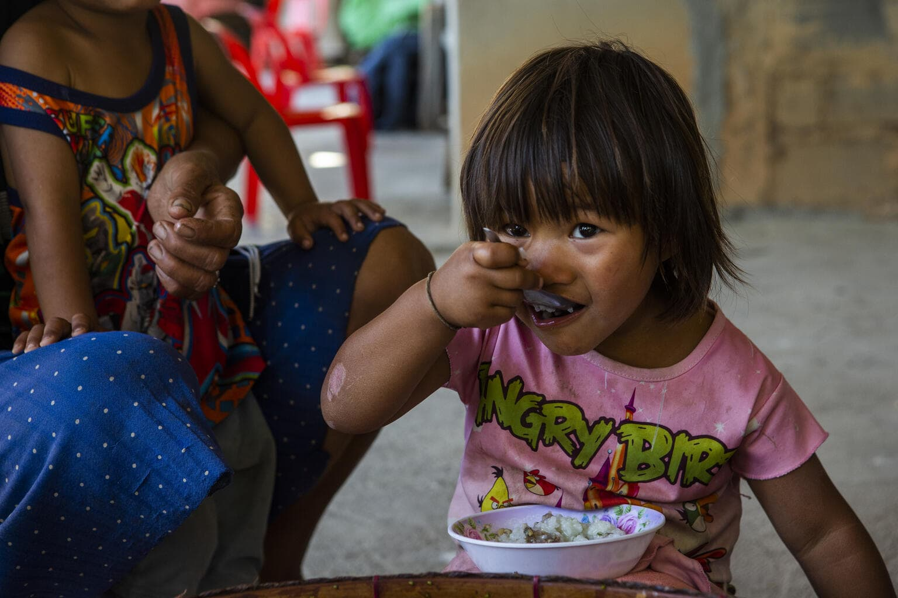

We are a non-profit organization dedicated to fighting malnutrition.
Providing nutritious food to underprivileged communities.
Ensuring better healthcare and child development programs.
Empowering families through education and awareness.
Serving communities across India since 1990.

Causes of Malnutrition
Inadequate Dietary IntakeLack of balanced nutrition, reliance on staple foods, and insufficient protein and micronutrient-rich diets.
Micronutrient Deficiencies (Hidden Hunger)Widespread deficiencies in iron, iodine, vitamin A, B12, and D, leading to anemia, stunting, and weakened immunity.
Maternal Malnutrition & Poor Infant Feeding PracticesUnderweight mothers, low birth weight babies, lack of exclusive breastfeeding, and delayed introduction of nutritious complementary foods.
Poor Sanitation & Recurrent InfectionsUnsafe drinking water, open defecation, and frequent diarrhea reduce nutrient absorption and worsen malnutrition.
Ineffective Implementation of Nutrition ProgramsLeakages, poor-quality food distribution, and lack of real-time monitoring in government schemes like PDS, Mid-Day Meal, and ICDS.